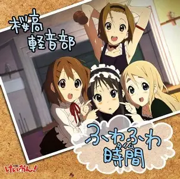

乐队成员
代表歌曲
ふわふわ時間(唯&澪 Mix)
作词：秋山澪 / 作曲：琴吹䌷
|
 |
轻音少女插曲，'流水的轻音部，铁打的滑滑蛋'。 |
天使にふれたよ!
作词：秋山澪 / 作曲：琴吹䌷
|
学姐们送给梓猫的饯别曲，'阿梓喵，以后要作为轻音部部长，独当一面了哦'。 |
Singing!
作词：秋山澪 / 作曲：琴吹䌷
|
轻音少女剧场版片尾曲，'当电影剧场的闪光灯亮起，少女们的磁带终于播放结束，虽然已看不见，但她们的故事仍在继续。' |